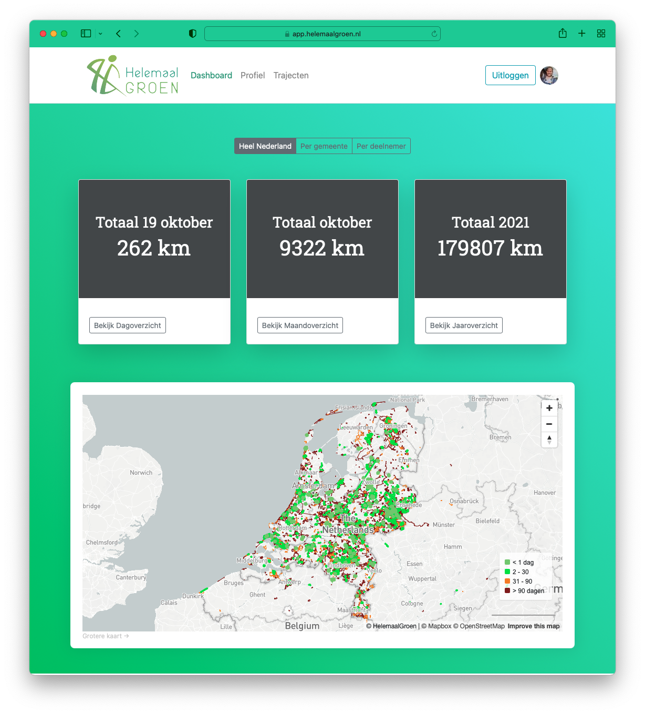
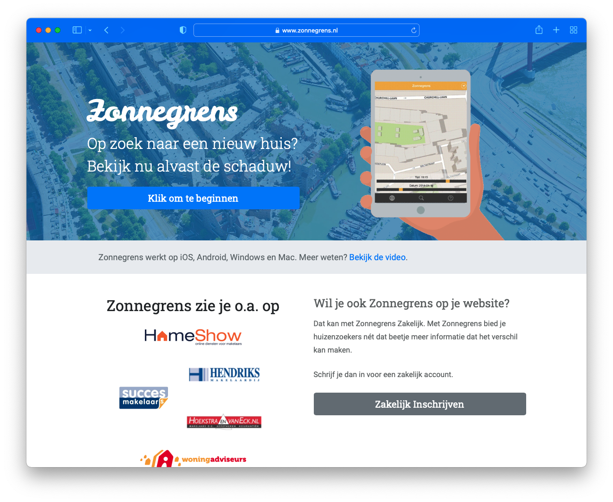
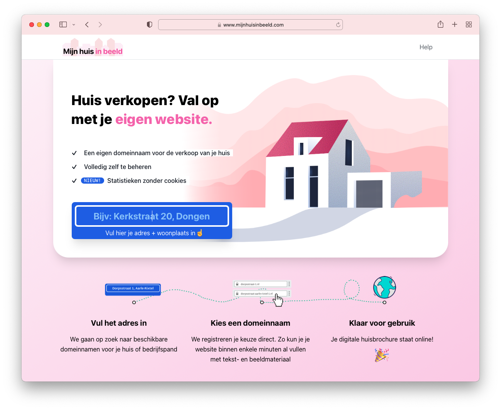
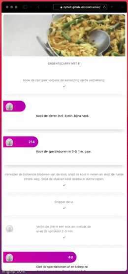

Side projects that I’m currently working on.
HelemaalGroen is a web application founded by Jaap de Boer, a retired veterinarian, who came up with the concept after being forced to walk instead of cycle after a cycling accident.
While walking, he noticed the large amounts of litter in the streets and decided to make a website to help people find and clean up litter.
The concept is to allow people to use a smartphone while they clean up litter. The app tracks their location and logs the route, similar to how Strava works. When a cleaning route is completed, it appears on a map as green. This shows to other users that it has been cleaned recently. After 30 days it begins to turn orange and then brown, and then it disappears.
The greener the map, the cleaner the streets.
I’ve built the application using Django and PostGIS on a DigitalOcean droplet. The MVP had a Strava integration, so the app part was handled by using Strava. Later on, a third party built dedicated iOS and Android apps for the project.

Zonnegrens is a web application which shows the shadow cast by real estate on a map. It is a project I started in 2016 and it’s generating quite a stable revenue flow. It’s not recurring in the SaaS way, but the avg monthly revenue is around €500. Built with Django and PostGIS.

This project was born out of a need to show my house on a website. I wanted it to be a top-level domain name, but this is quite a hassle, so this project does everything automatically. Users can register their domain name (streetname + housenumber + city) and the website will register the domain for them. After registration, users can choose a theme, provide details about the house and upload images. Then the website will automatically create a website for the house to sell.
See https://www.mijnhuisinbeeld.com/ (in progress)

QR Finder is a web application that allows you to create QR code stickers. When the code gets scanned, a URL opens with details about the object, the owner etc.
Similar to the QR Finder project, but when the QR code gets scanned, a pre-defined phone number gets called via Twilio, to replace the physical doorbell. Allows for a flexible doorbells setup.
Why does email have to look so formal? Dear sir? Sincerely? Times have changed. WhatsMail is a web application that looks exactly like WhatsApp, UI-wise. But it uses good-old e-mail under the hood. People like to use whatsapp because it’s quick and easy to use. This projects attempts to borrow the UI of whatsapp to bring a better UX to email.
CookTracker is a web application that allows multiple timers to run in a recipe. Just follow the steps and the timers will start when you are ready.
